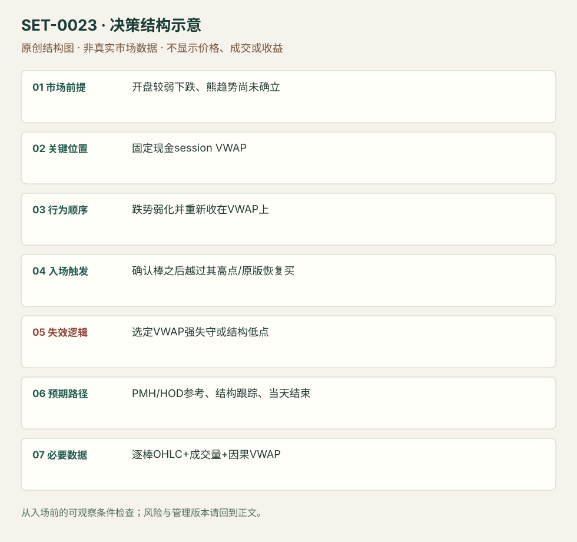

弱开盘跌势的 VWAP 收复
Opening Washout VWAP Reclaim · SET-0023 · reviewed · v1.0.0
盈利证据：not_established。审查范围与来源版本见第13节；未知字段保留缺失原因。
1. 名称与快速概览
现金开盘后出现较弱卖出，随后恢复到当日 VWAP 上方，等待确认棒或其高点突破进入。VWAP 必须是事先定义的同一 session 计算，触发是收复而非简单触碰。
记录口径：PA supporting；必要数据 OHLC、volume、VWAP。名称性质：编辑性描述名，英文保留来源术语以便检索。reviewed 只表示本条规则与证据记录审查通过，盈利状态为 not_established。
2. 本质与行为假说
价格恢复至成交均价上方，是早期卖出没有继续占优的可观察代理。它不等于每个空头亏损，也不证明机构买入。VWAP 计算的成交场所和盘前是否纳入会改变信号。
3. 适用市场与环境
SAI 限定弱开盘下降，明确区别已经形成 lower highs/lows 的熊趋势。若 VWAP 强斜向下、回升量弱并多次失败，更容易只是反弹。
来源实用市场：美国个股。
Session：美股/ES现金参考段 09:30–16:00 America/New_York；收盘前平仓。期货夜盘单独建背景，不将其并入开盘区间。
跨市场：本版不主张已经验证的跨市场迁移；更换市场必须重定数据来源、流动性与session。
4. 出现前的观察清单
确认基准重置时点和可交易数据；标 LOD、PMH、最近局部低点。观察早跌是否弱化，VWAP下方是否仍不断形成新低。
5. 形成过程与状态转换
开盘下降 → 下行动能减弱 → 棒收回VWAP上方 → 突破确认棒高点/恢复买量 → 持续在均价上方才有延续。
6. Entry trigger 与执行方式
来源有直接VWAP上方恢复买和等收盘两版。本库标准复盘入口为确认棒收于VWAP上方后，下一棒越过高点；触发未到则撤单。用VWAP触碰限价是提前版，应分开统计。
7. Invalidation 与止损逻辑
强收于VWAP下方是原版失效；局部低点是 TradingSim 结构保护版；SAI 也讨论宽至LOD的选择。三者不能在同一交易亏损后切换；初始风险需在入场前固定。
8. Exit、target 与 trade management
先看PMH或当日已知高点；越过后跟结构低点，不因“已收复”忽略第二次跌穿。交易日结束强制平仓；所有分批价与数量须留记录。
9. 常见 variations
开盘洗盘和盘中均价收复共享触发，但本条主版限早期弱跌。更换VWAP锚点、标准差带或加EMA只作为计算/过滤版本。
10. 失败方式与不交易条件
多次穿线震荡；均价下降时仅短暂收上；确认棒过长导致空间小；把最终当日VWAP放回早期信号；失败后凭日低宽止损继续等待。
11. 与相近 setups 的区别
12. 图表与案例解读
已看 PTON 与 IMMY 图。IMMY 箭头明确区分收于VWAP上方和之后突破；这是文字执行顺序的视觉佐证。IMMY完整交易日日期和时区未确认。
- [VIS-000024] 来源PDF第20页图表；定位：PDF页序 20。PTON 早跌后收复紫色VWAP，作者给出早入和确认路线。 验证：chart_viewed_pdf_page。
- [VIS-000025] Conservative VWAP Entry；定位：Chapter 1 Conservative Entry。IMMY 先收上蓝线，再突破确认棒高点；图内箭头为作者教学标记。 验证：chart_viewed。

本地原创示意（VIS-000080，非真实市场数据）：

小屏阅读可打开原尺寸示意图并缩放。

此图用于对照识别顺序与风险定义；不计入真实案例覆盖率。
视觉材料元数据与查看范围
- VIS-000024 · real_source_chart / structure_and_trigger / chart_viewed_pdf_page
品种：PTON；日期：未知/不适用；周期：5分钟/1分钟；时区：未知/不适用
日期未在画面中核对；时区未在画面中核对；作者示例；不是独立成交审计 - VIS-000025 · real_source_chart / structure_and_trigger / chart_viewed
品种：IMMY；日期：未知/不适用；周期：5分钟；时区：未知/不适用
日期未在图中核对；时区未在图中核对；来源图表不是成交审计 - VIS-000080 · synthetic_structure_diagram / illustration_only / generated_not_market_evidence
品种：未知/不适用；日期：未知/不适用；周期：未知/不适用；时区：未知/不适用
无真实品种、日期或价格：这是结构示意
13. 证据、分歧与未知项
SAI 与 TradingSim 来自不同实践家族，但均为教育例和执行讨论，没有本版本经成本的独立收益证据。SAI 收盘止损可能在快速跌势中扩大实际亏损。
- [EVD-000042] SAI Trades，《My Experience: Trading the Open Playbook》，SRC-0013；定位：PDF页序20 Opening Washout Long: VWAP Reclaim。支持：跌势较弱、不是已建立熊趋势；在VWAP上方恢复买入，VWAP强失守/LOD版本止损。
- [EVD-000043] Al Hill / TradingSim，《The VWAP Indicator Ultimate Guide And Video》，SRC-0022；定位：Chapter 1 Conservative Entry / VWAP Trade examples。支持：等棒收于VWAP上方并突破其高点是更保守入场；强跌破后并不一定返回。
14. 可用于复盘的检查表
- ☐ 下单前的前提可核对：开盘较弱下跌、熊趋势尚未确立
- ☐ 事前标记位置：固定现金session VWAP
- ☐ 行为按顺序出现：跌势弱化并重新收在VWAP上
- ☐ 实际触发符合选定版本：确认棒之后越过其高点/原版恢复买
- ☐ 事先写明本次否定条件：选定VWAP强失守或结构低点
- ☐ 目标/路径只用当时已知信息：PMH/HOD参考、结构跟踪、当天结束
- ☐ 数据满足 逐棒OHLC+成交量+因果VWAP；记录时间、点差、滑点、队列和未成交
- ☐ 记录截止平仓及规则偏离；正常亏损不事后改成“未成立”
15. 后续验证问题
是否纳入盘前成交对触发时刻影响多大？确认棒上穿的跳价成本怎样？多次穿线日如何定义禁入？
双向相关导航
- SET-0022 开盘洗盘后守住盘前支撑 0023 的决定触发是重新站上当日VWAP；本条可在仍低于VWAP的支撑复测处进入。
- SET-0024 VWAP 穿透、偏离失败与回测 0024 在原弱方向背景中等穿越偏离失败后的回测做空，而非把首次穿线当多头恢复。